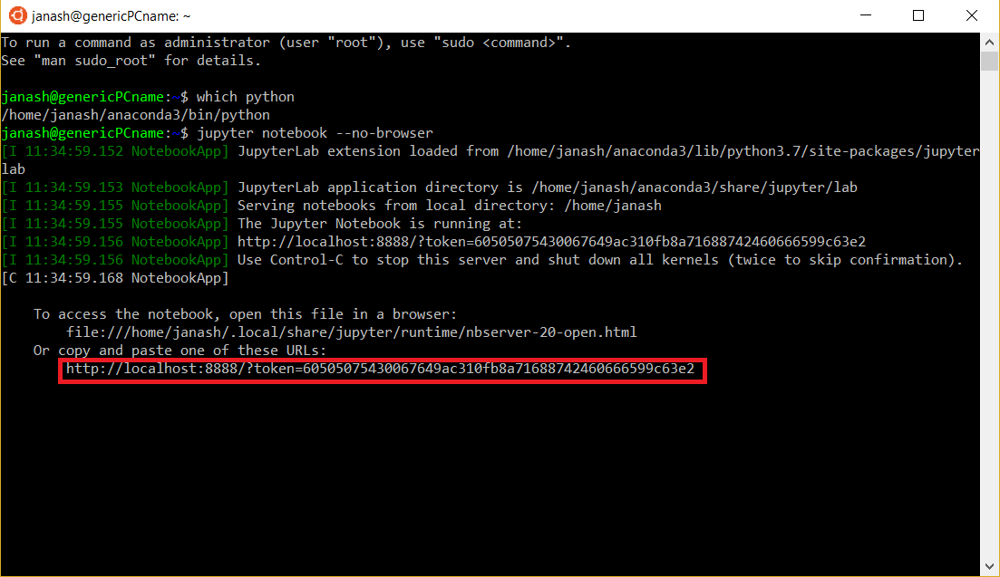

Set Up#
Anaconda Installation#
Windows#
WSL#
If your computer uses the Windows operating system, we strongly recommend installing Windows Subsystem for Linux (WSL). Follow the installation instructions at this link. If you don’t have a preference on Linux distribution, we recommend installing Ubuntu 18.04.
Once WSL is installed, open your ‘Start’ menu and choose ‘Ubuntu’. This should open a terminal window. The first time you have opened Ubuntu, you will see a message which says “Installing, this may take a few minutes…”. After the installation is done, you will have to create a username and password. After these are created, you should be able to use the terminal.
For the WSL, you have to install Anaconda from the command line. Open a terminal, then follow the installation instructions given here. Specifically, the commands you will need are
$ wget https://repo.anaconda.com/archive/Anaconda3-2020.02-Linux-x86_64.sh
$ bash Anaconda3-2020.02-Linux-x86_64.sh
After installation, close and reopen your terminal window. If you do not see (base) before your username on the command line, type
$ conda init
then close and reopen your terminal window.
Next, check if ‘anaconda3’ is in the path that prints when you type ‘which python’. If not, type the following command into the terminal (change to have your username)
$ echo ‘export PATH=/home/YOUR_USERNAME/anaconda3/bin:$PATH’ >> ~/.bashrc
Verify that you have Anaconda installed by opening a Jupyter notebook.
$ jupyter notebook --no-browser
Your window should look similar to this after the command. Copy the URL outlined in red, and paste it into a browser.
After verifying your Jupyter notebook works, you will also need to install a compiler. Use this command
$ sudo apt install build-essential
You will need a text editor which can be used to edit files on your WSL install. One good option is VSCode with the WSL extension.
Without WSL#
If you are not able to install WSL, please download and install Anaconda for Windows. If you are using Windows, you will also need to install MS-MPI.
Click the link here, download an MS-MPI install binary from the website, and use it to install MS-MPI onto your machine.
You should then follow the instructions below for creating your conda environment.
Mac OS and Linux#
You can download Anaconda and install using this link. Make sure to download the correct distribution for your OS and choose the Python 3.7 version. Install the software as you would install any software you downloaded.
Linux users can also install Anaconda using the command line instructions given in the Windows section.
MacOS users should also install XCode.
Linux users should install compilers using this command
$ sudo apt install build-essential
Creating a Parallel Programming conda environment#
Everyone should complete and read this section after installing Anaconda.
To make a great deal of compilation and installation simpler we will create a conda environment. This environment isolates the parallel programming stack from the rest of the dependencies on your laptop.
After installing Anaconda, type the following command into your terminal. This creates an environment called “molssi_pp” which runs Python 3.7.
$ conda create -n molssi_pp python=3.7
After creating the environment, activate it using the command
$ conda activate molssi_pp
Next, install NumPy, mpi4py, CMake, and OpenMP:
$ conda install -c conda-forge numpy mpi4py cmake openmp mpich compilers
Confirming Install#
Let’s confirm that everything is working. Make sure you are in the environment you created.
First, check that you have a working version of the mpiexec command:
$ conda activate molssi_pp
$ mpiexec --version
mpiexec (OpenRTE) 3.1.4
The exact output isn’t critical, as long as some version of mpiexec is found.
Now, check that the mpi4py package installed correctly:
$ mpiexec -n 4 python -c "from mpi4py import MPI;print(MPI.COMM_WORLD.Get_size())"
4
4
4
4